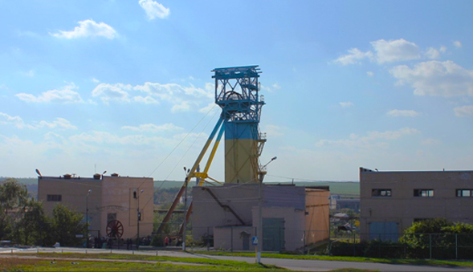
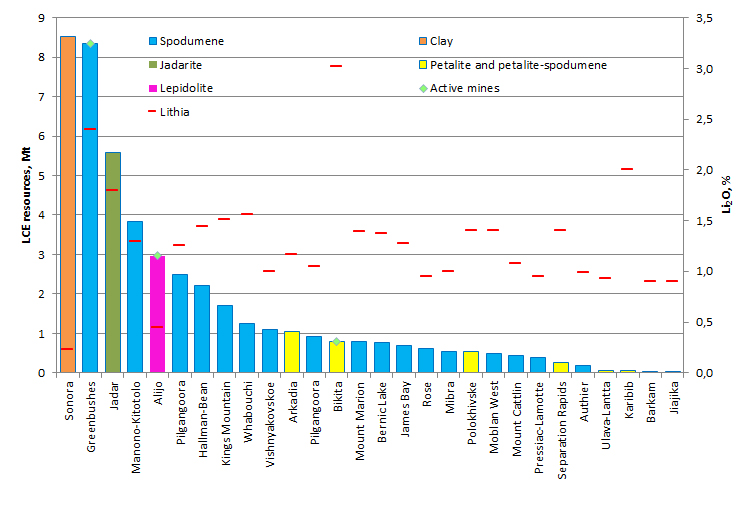

Lithium mining
in the world
The world resources of lithium are around 13 million tonnes.
Lithium mining and manufactring is conducted in the USA, Canada, the UK, Germany, Japan, Chily, Brazil, China, Russia and Australia.
The figures regarding the world lithium deposits widely range.

COMPARISON WITH OTHER DEPOSITS

Types of consumption
- Lithium minerals (24% of consumption) – are used in the products of glass and ceramics. They contribute to energy saving in the production of aluminum, plastics and rubber products.
- Lithium chemicals (76% of consumption) – are used in batteries production, pharmaceutical industry and other areas. Lithium batteries are lighter then other types of batteries, and can hold a higher charge much longer compare to other batteries types.